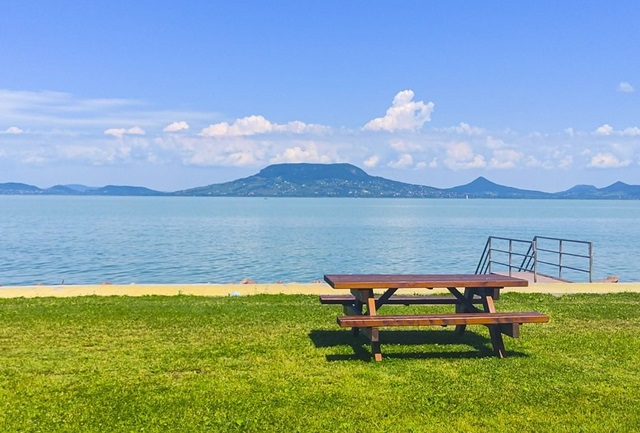
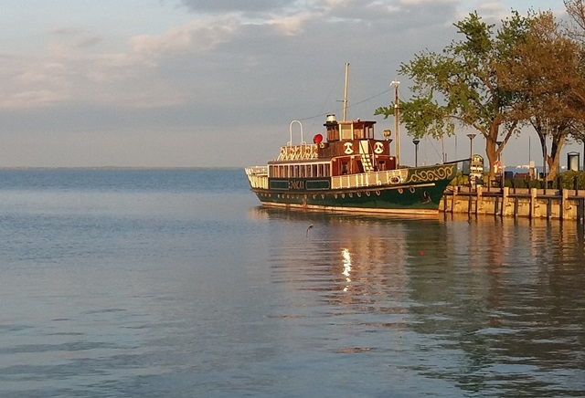
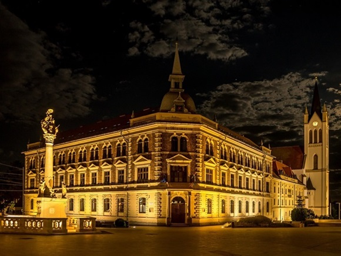
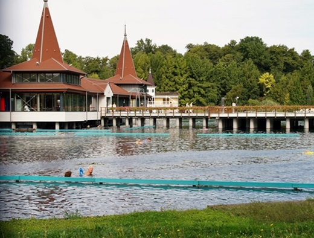

Siófok városa Magyarország legnagyobb és legnépszerűbb üdülőhelye, amely a Balaton déli partján helyezkedik el. Az ide látogatók számára számos kikapcsolódási és szórakozási lehetőséget kínál, így ideális célállomás a nyaralásra vagy a hétvégi kirándulásokra. A város jellegzetessége az ősi történelemmel és a modern turisztikai szolgáltatásokkal való harmonikus együttélés. Siófok különleges légköre a pezsgő éjszakai élet, a hangulatos strandok és a lenyűgöző kilátások miatt vonzza a turistákat.A város központjában található a híres siófoki Víztorony, amely több mint 60 méter magas és gyönyörű kilátást nyújt a városra és a Balatonra. Aki szereti a történelmet, érdemes felkeresnie a Siófoki Fő teret is, ahol számos száz éves épületet találhatunk, mint például a patinás vízumirodaház vagy a városháza. A Balaton partján lévő siófoki strandok kiválóan alkalmasak a napozásra és a fürdőzésre. A part mentén sétálva számos büfé és étterem várja a vendégeket a tradicionális magyar ételekkel és a friss halakkal. A vízi sportok szerelmesei is megtalálják itt a számításukat, hiszen lehetőség van vitorlázásra, szörfözésre és jet ski-re is. Siófokon található a beruházásoknak köszönhetően egy modern, dinamikus üdülőhely is, amely számos szállodával, villával és apartmannal várja a látogatókat. A város turisztikai központjában számos bár, klub és kaszinó található, így a vendégek este is bőven találnak programot maguknak. Ezenkívül Siófok a kulturális és sportesemények színhelye is. Nyáron különböző fesztiválok és koncertek kerülnek megrendezésre a városban, amelyek vonzzák a hazai és külföldi látogatókat. A sportrajongók pedig élvezhetik a számos lehetőséget, mint például a kerékpározás, a tenisz vagy a golfozás. Siófok városa minden korosztály számára tartogat kikapcsolódási lehetőséget, legyen az egy romantikus kirándulás a pároknak, egy családi nyaralás vagy egy bulizós hétvége a barátokkal. A város színes programkínálata és a Balaton közelsége még vonzóbbá teszi Siófokot a turisták számára.
Balatonfüred a Balaton északi partján, Veszprém megyében található város. Gyönyörű természeti környezettel, történelmi látnivalókkal és fürdőhellyel rendelkezik, amelyek vonzzák a turistákat egész évben. A város fő látványossága a híres Tagore sétány, amely a Balaton partján húzódik. A sétányon séta közben csodálatos kilátás nyílik a tóra és a környező hegyekre. Számos étterem, kávézó és butik található itt, így a látogatók élvezhetik a pihenést és a vásárlást is. Balatonfüred a balatoni régió gasztronómiai központja is. A városban található éttermek széles választékát kínálják a hagyományos magyar ételektől kezdve a nemzetközi konyháig. A helyi borok különösen kiválóak, így érdemes megkóstolni a Balatonfüred környékén termelt borokat is. Összességében, Balatonfüred egy gyönyörű város, amely ideális hely a pihenésre és a feltöltődésre. A Balaton-parti sétány, a lehetőség a fürdőzésre és a wellness kezelések, a történelmi látnivalók és a kiváló gasztronómia mind hozzájárulnak egy felejthetetlen nyaraláshoz.
Keszthely egy gyönyörű történelmi város a Balaton északi partjánál. A város a tiszta vizű tó és a hegyek által körülvett különleges természeti környezetben található, ami miatt ideális célpont a természetkedvelők és a pihenni vágyók számára. Keszthely gazdag történelmi örökséggel rendelkezik, amely megmutatkozik a város utcáin, épületein és múzeumain. Az egyik legimpozánsabb látnivaló a Helikon Kastély, ami ősi pompájában tükrözi a vidék arisztokratikus múltját. A kastély gyönyörű kertjeivel és parkjaival ideális hely a sétára és a piknikezésre. A város központjában található a főtér, ahol gyönyörű épületek, éttermek és üzletek sorakoznak egymás mellett. A főtér hangulatos teraszai ideális helyek egy finom kávé vagy egy ízletes helyi specialitás kipróbálására.A Balaton-part kellemes sétákra, strandolásra és vízisportokra ad lehetőséget. A parton található, Keszthelytől nem messze található csodálatos tó, a Hévízi-tó természetes gyógyító erejéről híres. A gyógyfürdők kiváló lehetőséget kínálnak a teljes kikapcsolódásra és a test és lélek felfrissítésére. A városban több múzeum is található, amelyek bemutatják a régió történelmét, kultúráját és természeti kincseit. Például a Balatoni Múzeum kiváló helyszín a balatoni régió múltjának felfedezésére. Keszthely a környező borvidékek és szőlőültetvények közelsége miatt ideális célpont a borkedvelők számára is. A környéken rengeteg borkóstoló és bortúra lehetőség várja az érdeklődőket. Mindenek felett Keszthely egy barátságos és vendégszerető város, ahol a helyiek mindig szívesen fogadnak turistákat. A gasztronómiai élvezetek, a történelmi és természeti látnivalók, valamint a pihenés és kikapcsolódás lehetőségei miatt Keszthely egy ideális hely a nyaraláshoz vagy a hosszabb tartózkodáshoz.
Hévíz egy híres és népszerű fürdőhely Magyarországon. A település a Balaton közelében található, és híres termálvízforrásáról ismert, amely az egész év során kellemes hőmérsékletű marad. Hévíz legjelentősebb attrakciója a Hévízi-tó, amely a világ legnagyobb természetes hévíztava. Az öböl közepén elhelyezkedő tó különlegessége, hogy a talaj alatt található vulkanikus kőzetek segítik a víz termális tulajdonságait. A tó vízét folyamatosan frissítik a forráson keresztül feltörő gyógyvizek, amelyek állítólag gyógyhatással bírnak. A Hévízi-tó ismertsége részben annak köszönhető, hogy a fürdővárosi környezetében útjába esik a Balaton, amely a régió egyik legnépszerűbb turisztikai célpontja. Így a látogatók a tó gyógyító hatásán túl élvezhetik a balatoni strandok, éttermek és sok más szórakozási lehetőség nyújtotta élvezeteket. A fürdővárosban található szállodák, wellness központok és gyógyfürdők széles választékát kínálják a látogatóknak. A gyógyvizeken és fürdőélményeken túl, Hévíz ismert a gyógy- és wellness kezelések széles skálájáról is. Masszázsok, különböző gyógyvizes fürdők és egyéb kezelések várják a vendégeket, akik felfrissülhetnek és kikapcsolódhatnak a mindennapok fáradalmaitól. Hévíz turisztikai célpontként való népszerűsége tovább bővült az elmúlt években, és mind a belföldi, mind a külföldi turisták számára vonzó úti cél lett. A város jó közlekedéssel rendelkezik, és könnyen elérhető Budapestről vagy más közeli nagyvárosokból. Összességében, Hévíz egy gyönyörű és vonzó hely, ahol a látogatók élvezhetik a termálvíz gyógyító hatását, a Balaton partját és a környező területek nyújtotta számos lehetőséget a pihenésre és szórakozásra.
